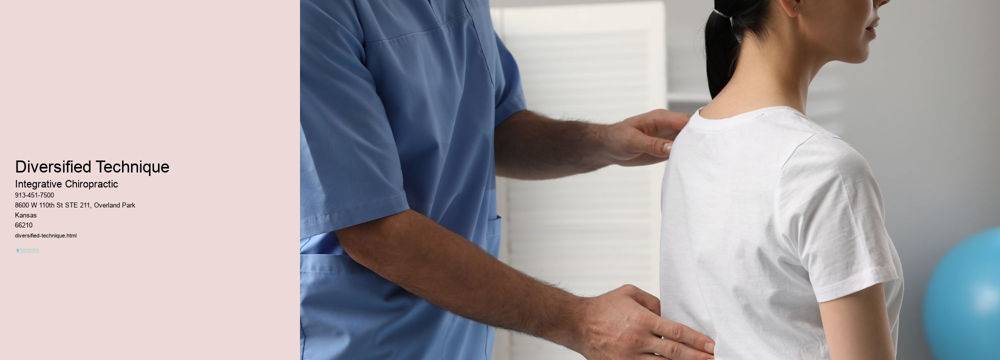

News
Chiropractic Overland Park, Kansas
Chiropractic Overland Park, Kansas
Manual Manipulation
Manual Manipulation
Diversified Technique
Gonstead Technique
Activator Method
Thompson Technique
FlexionDistraction
Extremity Adjusting
Atlas Orthogonal
Sacro Occipital Technique
Cox Technic
About Us
Contact Us

Diversified Technique
Manual Manipulation
Diversified Technique —
Manual Manipulation
Diversified Technique
Gonstead Technique
Activator Method
Thompson Technique
FlexionDistraction
Extremity Adjusting
Diversified technique is an awesome way to enhance one's performance! It involves using a variety of different approaches to approach a problem or task. For instance, when solving a math problem, instead of just trying a single method, you can try out multiple strategies and see which one works best for you. Additionally, diversifying your techniques can also give you more creative solutions that you wouldn't have thought of before. (In fact,) this is why it is important to use diversified techniques in various areas such as work and study.
However, not everyone knows how to properly apply the concept of diversified technique. First off, it's essential to know what kind of skillset or knowledge base one has so they could decide on the appropriate methods to use. Then they should create a plan outlining all the steps involved in completing the task or solving the problem at hand - from start to finish. Lastly but not leastly, it's important to maintain focus and consistency throughout each step while keeping an open mind for alternative ideas and solutions along the way!
Conclusively, diversified technique offers numerous advantages when tackling any issue; however,(one must) be sure they have enough understanding about their subject matter before diving into its application. With practice and patience comes mastery - so don't hesitate to experiment with diverse strategies until success is achieved!
Gonstead Technique
Gonstead Technique is a Chiropractic system that's been around since the 1920s. It was developed by Clarence S. Gonstead, D.C., (Doctor of Chiropractic). The technique emphasizes proper alignment of the spine and pelvis to improve overall health and well-being! It utilizes specific full spine analysis and adjustment of vertebral subluxations (areas where two or more bones are out of alignment) to reduce pain and restore normal function. And its goal is to correct these misalignments using precise manipulation in order to restore balance within the body.
Transition: This technique is unique compared to other chiropractic methods for numerous reasons...
For starters, it focuses on restoring motion into joints - rather than just correcting misalignments - so as to relieve tension on the muscles supporting them. Also, it uses a thorough examination process which includes palpation (feeling with the hands) and x-rays in order to locate subluxations accurately before any adjustment takes place. Lastly, Gonstead practitioners utilize an instrument called an adjusting table which enables them to administer gentler adjustments while still achieving effective results!
Transition: Despite its effectiveness, there are some drawbacks associated with this approach...
It typically requires a larger financial investment due to its need for specialized equipment like X-Ray machines and tables; furthermore, it's not suitable for everyone because it can be too forceful if applied incorrectly - possibly leading to injury or even worse conditions. Additionally, results may take longer than other approaches since multiple visits are often necessary in order for treatment goals to be met effectively!
Activator Method
The Activator Method is an incredibly useful tool for teaching! It involves (using) creative and interactive strategies to help students learn. It encourages students to think critically about the material they are studying and apply it in a meaningful way. The method also facilitates problem-solving, as well as communication between instructors and pupils.
First of all, the activator method offers teachers a variety of ways to engage their class in active learning. For instance, teachers can use games, puzzles or even simulations to present new information in a fun and engaging way. Additionally, the activator method enables teachers to assess student’s knowledge before presenting new material, thus ensuring that their instruction is tailored to each individual student’s level of understanding.
Moreover, the activator method allows for greater collaboration between teacher and pupils during lessons; this fosters a more productive learning environment where everyone feels involved and engaged. Furthermore, it allows instructors to connect with their students on a personal level, which helps create trustful relationships based on mutual respect. In addition, the activator method enables students to take ownership over their own learning process by providing them with opportunities for both self-reflection and reflection on peers' work too!
Finally, by incorporating elements of creativity into class activities - such as song lyrics or artwork - teachers can make lessons more enjoyable for pupils whilst still maintaining educational rigor! All in all, employing the activator method is an effective way of making sure that learners get the most out of every lesson - resulting in increased engagement and improved academic performance overall! Therefore, it should be considered by any teacher seeking an innovative approach to teaching!
Consequently (therefore), there are many advantages associated with using this type of methodology when teaching!
Thompson Technique
The Thompson Technique is a unique form of chiropractic care that has been used to treat a number of physical ailments. It utilizes gentle adjustments to the spine and other joints in order to restore alignment and mobility, as well as reduce pain and discomfort. (This technique) has been found to be particularly effective for relieving chronic back and neck pain.
One of the key components of the Thompson Technique is its use of segmental drop tables. These tables are specially designed so that when a patient lies on them, their body weight causes specific segments of the spinal column to drop or sink into position more easily than with traditional adjustment techniques. As a result, these drops allow for deeper tissue stretching and manipulation, which can help to realign misaligned vertebrae and improve overall range-of-motion in the spine.
Furthermore, this technique also employs the use of diversified thrusts in order to achieve greater control over spinal movements. Diversified thrusts involve controlled force being applied directly onto joints by using short lever arms or manual pressure from an adjusting instrument such as an activator tool. This allows for more precise adjustments than those achieved through traditional manipulations alone.
In addition, practitioners who specialize in this method often utilize motion palpation techniques while treating patients; this involves feeling for movement along certain regions of the spine during range-of-motion testing in order to identify areas where joint restrictions may exist. By doing so, they are better able to determine which areas require corrections or extra attention during treatment sessions.
Finally, many practitioners who employ the Thompson Technique believe that it offers superior results compared with other forms of chiropractic care due its effectiveness at restoring optimum joint mechanics while also providing lasting relief from muscle tension and spasms! Furthermore, it can be used safely on both children and adults alike without any adverse side effects associated with it's use; thus making this type of therapy an attractive choice for those seeking natural pain relief solutions without having to resort to medication or surgery.
All in all, The Thompson Technique is a powerful form of chiropractic care that provides patients with safe yet effective treatments for various types musculoskeletal issues including chronic back pain! Moreover, since it relies on gentler adjustment methods compared with those employed by other forms of manipulative therapy; it makes it possible for sufferers from even acute cases such as whiplash or disc herniation receive proper care without risking further damage or injury! Therefore, if you're looking for an alternate approach for relieving your aches & pains without unnecessary risks then definitely give this technique a try!
Sacro Occipital Technique
Sacro Occipital Technique (SOT) is a type of bodywork that focuses on the relationship between the pelvis and the spine. It is used to help realign misaligned spinal structures and restore balance throughout the body. SOT can be incredibly helpful in addressing a variety of conditions, such as sciatica, scoliosis, neck pain, headaches, disc herniation, and more. It can also improve mobility and range of motion across joints!
Transition: On top of its many benefits, SOT is easy to learn and practice.
Unlike other forms of manual therapy or chiropractic care, it doesn't require any special tools or equipment for implementation. All you need are your hands! Practitioners use their thumbs to apply pressure along specific points on the spine and sacrum while simultaneously supporting the patient's pelvis with their other hand. This allows them to detect any misalignments in the spinal structure and make adjustments accordingly.
Additionally, SOT makes use of stretching exercises designed to release tension in areas like the lumbar region or hips; these movements allow for improved circulation throughout the area being worked on as well as increased flexibility. Furthermore, practitioners often incorporate breathing techniques into their sessions; this helps patients relax during treatment so they can reap all its rewards!
All in all, Sacro Occipital Technique offers many gains when it comes to restoring balance within one's body. It's an effecive yet non-invasive method that anyone can benefit from - so why not give it a try?
Cox Technic
Cox Technic (also known as Flexion-Distraction) is a type of chiropractic care that focusses on treating lower back pain. Its primary goal is to reduce pressure on the spine, and to create space between vertebrae so that the discs can heal naturally. It is not meant to be a quick fix, but rather an ongoing treatment which provides long lasting results!
The technique utilizes manual therapy with special tables & machines designed to increase mobility & flexibility in the spine. During sessions, the patient lies face down on a cushioned table while their practitioner moves their body & applies gentle pressure in specific areas. This allows for stretching of muscles and ligaments around the spinal column, resulting in increased range of motion and improved function. Furthermore, this process helps to relieve tension and spasms, allowing for greater physical comfort at home or work.
Also, Cox Technic has been found useful for postural correction by aiding in the realignment of vertebral segments which have become misaligned due to poor posture habits or injury. Thus it can help people regain proper structure & balance within their body's framework. Additionally, this method has also demonstrated beneficial effects in treating pain associated with sciatica & degenerative disc disease!
In conclusion, Cox Technic is able to offer relief from persistent lower back pain through its effective use of manual therapy combined with technologically advanced tools & techniques. Its ability to provide long term benefits makes it an attractive option for those seeking sustainable solutions for chronic discomfort conditions. Plus its implementation of postural correction provides many individuals with the opportunity to improve their overall health status - something that can't be said about every type of healthcare intervention!
Frequently Asked Questions
What is diversified technique?
Diversified technique is a chiropractic adjustment technique used to restore joint mobility and reduce nerve irritability.
How does diversified technique work?
Diversified technique works by using short lever, high velocity thrusts to the restricted joint in order to restore normal range of motion.
What are the benefits of diversified technique?
The benefits of diversified technique include relief from pain, improved function and movement, increased joint range of motion, and improved posture.
Diversified Technique